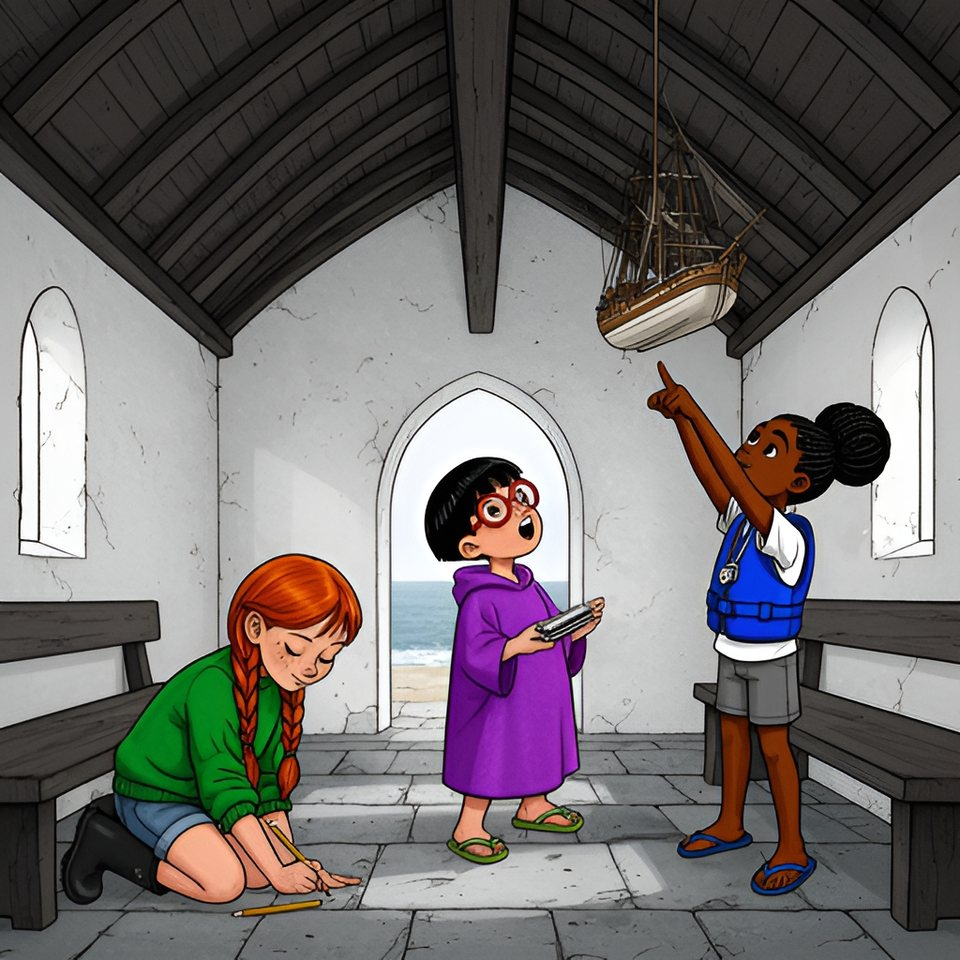

Titistoire › Les Galaxies (8-10 ans)
Le ventre de la Rieuse
Le Trésor coupé en deux, épisode 5 sur 8 : un feuilleton à énigmes sur l'île de Lodenn.

▶ Écouter et regarder l'histoire
Gratuit, sans inscription : la voix lit, le texte suit mot à mot, les images tournent comme dans un album.
Le texte de l'histoire
Sur la lande, Tino a compté deux cents pas de mousse, et Maël, Enora, Victoire, Awa et Oscar l'ont suivi jusqu'à la pierre percée du muret. Sous la pierre dormait une ardoise. Puis Gildas, l'homme du bateau gris, leur a montré la fente qui grimpe dans le granit du Môle.
L'ardoise disait : « Mon premier se prend la nuit sur le pont, chacun son tour. Mon second porte couronne. Mon tout est le ventre de ma Rieuse. Cherche-le là où il regarde le ciel. »
Deux jours que cette charade tournait dans six têtes, et deux jours que la mer boudait : trente-cinq, puis trente-huit sur l'ardoise de Job, autant dire rien. Ce matin-là, les deux bandes tenaient conseil sur le parapet du quai, un camp à chaque bout.
« Se prend la nuit sur le pont, chacun son tour, récita Victoire. — Un rhume », proposa Oscar, et il éternua pour montrer. Maël regardait le large, du côté où naviguait son père. « Le quart, lâcha-t-il. Le tour de garde. Affirmatif. »
« Mon second porte couronne, poursuivit Victoire. — Le roi, trancha Enora. Quart-roi. La vérité vraie, c'est que le carroi est une pièce secrète qu'on trouve sur quatre-vingt-dix-neuf pour cent des… » Elle s'arrêta, une tresse entre les dents. « La reine. Quart, reine. — Carène, acheva Maël. Le ventre du bateau. Gwenola le répète assez. »
Victoire leva un doigt. « Objection. Il reste la dernière ligne. Un ventre de bateau qui regarde le ciel, c'est un bateau à l'envers. » Les trois Bottes pâlirent ensemble, et Tino en lâcha son seau. À Lodenn, il n'y en avait qu'un. Ils s'asseyaient dessus depuis trois ans : la Coque.
On fila vers le nez de l'île, les Bottes debout sur les pédales, les Tongs derrière, sur des vélos de location qui couinaient. Au-dessus de l'anse, la vieille barque retournée attendait sur sa dune, noire de goudron, ses bottes alignées devant la porte.
« Je propose un marché, déclara Victoire. Vous sortez les choses. Nous tenons l'inventaire. — Avis de grand frais sur quiconque touche à mes affaires », gronda Maël. Mais il écarta lui-même le rideau de toile rouge. Un traité est un traité.
Alors la Coque rendit tout. Onze bouées. Un casier sans fond. Dix-sept fonds de pots de peinture, pour compenser. Une étoile de mer sèche, à quatre bras. Un nid de cordes où il manquait, jura Maël, justement un bout. Et quatre cent douze capsules de bouteille, comptées par Tino. « En fait, quatre cent onze », rectifia Awa, qui notait.
Oscar, allongé dans l'herbe, saluait chaque trouvaille d'un « tadam » d'harmonica ; au trentième, il dormait. Enora brandit une botte dépareillée. « La vérité vraie, c'est qu'elle a appartenu au capitaine en personne. — Il y a ton prénom dedans », observa Victoire. Trois ans de trésors, aucun du capitaine.
Le lendemain, la mer ne fit guère mieux : quarante-huit, annonça Maël sans regarder l'ardoise. Il fallut tout ranger. Le goudron de la Coque chauffait à y cuire une crêpe. Oscar tint dix minutes, déclara que les musiciens craignaient la chaleur, et grimpa s'asseoir au frais dans la chapelle, sur la butte.
Il redescendit sans se presser, en chantonnant. Il regarda la Coque. Il regarda la butte. Il regarda de nouveau la Coque, la tête penchée, comme on compare deux notes. « C'est drôle. Votre plafond d'église, on dirait votre cabane en plus grand. »
Tino lâcha ses capsules. Maël fixait la chapelle comme s'il ne l'avait jamais vue. Ils y entraient depuis toujours, pour Noël, pour les mariages, pour se cacher — sans jamais regarder en l'air pour de bon. « Mer belle, murmura-t-il. On y va. »
Dedans, il faisait frais comme dans une cave. Au-dessus des bancs s'arrondissait le plafond de bois sombre, avec ses côtes courbes et, tout du long, une grosse poutre droite. « Une quille, articula Awa. En fait, ce n'est pas un plafond. C'est une coque. »
Elle montra le trois-mâts miniature qui pendait à deux cordes, sous la poutre. « Et voilà son portrait. » Oscar, la tête renversée, la bouche ouverte, tournait sur lui-même. Ce n'était pas une baleine. « La Rieuse, souffla Maël. Elle est là depuis toujours, le ventre en l'air. »
Tino, lui, s'était accroupi : à force de trouver des ancres au plafond et au pied des menhirs, il en cherchait partout. Sous la maquette, mille semelles avaient creusé une dalle. Il y restait une ancre, pâle comme une trace de craie, et des lignes qu'on sentait sous l'ongle sans pouvoir les lire.
Victoire sortit son carnet, et Enora en arracha une page avant qu'on ait voté. Elle la posa sur la dalle et frotta le crayon, à genoux, un bout de langue entre les dents. Pour une fois, elle ne racontait rien. Le gris monta sur le papier ; dans le gris, des lettres blanches.
Victoire lut, lentement, à cause des s qui ressemblaient à des f : « Troisième leçon : ce qui ne navigue plus peut encore abriter. La quatrième t'attend chez mes chanteuses, qui ne chantent que les pieds au sec. »
« Frappe à chaque porte : elles te répondront clair. Une seule a la voix sourde. Elle garde ce qu'on lui a confié. » Là-haut, la petite Rieuse tournait un peu sur ses cordes. « Une chorale qui a peur de l'eau, commenta Oscar. Je les comprends. »
Tino voulut l'entendre encore, moins vite. Victoire reprit, en détachant chaque mot : « La quatrième t'attend chez mes chanteuses, qui ne chantent que les pieds au sec. Frappe à chaque porte : elles te répondront clair. Une seule a la voix sourde. Elle garde ce qu'on lui a confié. »
Tino remuait les lèvres. « Frappe à chaque porte… J'ai frappé, moi. Le premier jour, avec un galet, pour vous embêter. — Et ça sonnait comme des cloches, se souvint Oscar. Il y en avait un qui faisait un la. »
Maël se redressa. « Les Chanteuses. Les gros rochers ronds de la grève. Les pieds au sec : il faut quatre-vingt-dix pour les voir. Aujourd'hui, quarante-huit. Demain, soixante-deux. Après-demain, soixante-dix-huit. Dans trois jours, quatre-vingt-treize. » Trois jours à attendre la mer. « Et quarante rochers, ajouta Tino. C'est pas moi qui le dis, c'est Job. »
On redescendit au port en roue libre. Sur le quai, par la fenêtre de la crêperie, Fañch tournait ses crêpes en chantant, comme tous les midis, sans plus écouter ce qu'il chantait : « Celle qui reste a tout porté, hisse et ho, la Rieuse ! pierre après pierre, trois étés. »
Victoire, qui cadenassait son vélo, fredonnait sans y penser. Le même air, plus lent, plus doux : celui dont sa grand-mère la berçait, à Port-Neuf. « Celle qui part a tout payé, hisse et ho, la Rieuse ! sou après sou, sans se nommer. » Oscar s'arrêta net, un pied en l'air.
« Stop. C'est la même chanson. Sauf que son couplet à lui, tu ne l'as pas, et que le tien, il ne l'a pas. » Il joua les deux à la suite sur son harmonica. Cela se suivait comme deux marches d'un escalier. « Tadam. Il vous en manquait un chacun. »
« Porté quoi ? demanda Enora. — Payé quoi ? » répliqua Victoire. Aucune n'en savait rien. Elles haussèrent la même épaule, au même instant, ce qui les vexa beaucoup. Oscar, lui, recomptait sur ses doigts : cinq couplets, maintenant.
« Quatre, trancha Victoire. Chez nous, il y en a quatre. — Tu es têtue, constata Oscar. — Nolwenn est née une nuit de grande marée, répondit-elle sans y penser. Chez nous, on dit que ça rend têtu. » Nolwenn, c'était l'aïeule de Victoire : la fille du capitaine qui était partie. Personne ne releva : il y avait des crêpes. Mais Tino retenait tout, même la bouche pleine.
L'après-midi, Enora ramassait les assiettes de la terrasse. Awa l'aidait, le nez en l'air : elle regardait l'enseigne, la dame de bois au-dessus de la porte, repeinte cent fois, qui riait, les cheveux au vent.
« En fait, pourquoi elle penche, votre dame en bois ? Les statues se tiennent droites. Ce sont les figures de proue qui penchent. — La vérité vraie, c'est qu'elle surveille les crêpes », assura Enora. Mais elle leva les yeux vers l'enseigne, un peu trop longtemps.
Awa repartie vers la plage, Enora emportait sa pile d'assiettes quand l'homme du bateau gris traversa le quai, sa tablette sous le bras. Il la salua, comme il saluait tout le monde, et demanda très simplement : « Et la suite, pour l'équipe ? Elle mène où ? »
Enora ouvrit la bouche. D'ordinaire, il en serait sorti un volcan, un sous-marin, quatre-vingt-dix-neuf pour cent de quelque chose. Il en sortit ceci : « C'est vrai : aux Chanteuses, dans trois jours. » Et elle attendit qu'il rie, comme tout le monde.
Il ne rit pas. Il consulta sa tablette, hocha la tête. « Quatre-vingt-treize. Basse mer à douze heures vingt. Merci. » Puis il lui tint la porte de la crêperie, parce qu'elle avait les mains prises.
Le soir, à l'heure de la soupe, les deux bandes remontaient le quai quand Gildas les croisa, sa roue d'arpenteur sur l'épaule. Il s'effaça pour les laisser passer. « À dans trois jours, aux Chanteuses, lança-t-il aimablement. Je serai à l'heure. » Et il descendit vers son bateau.
Six enfants restèrent plantés là. Les Bottes dévisagèrent les Tongs. Les Tongs dévisagèrent les Bottes. Oscar souffla deux notes graves. Quelqu'un avait parlé, et chaque bande savait parfaitement qui : quelqu'un de l'autre. Enora, elle, s'intéressait énormément au Douanier.
Qui avait parlé ? Chacun rentra chez soi avec sa réponse, et presque toutes étaient fausses. Ce soir-là, la mer revint border Lodenn, comme tous les soirs. Sur l'ardoise de la cale, Job écrivit le chiffre du lendemain : soixante-deux.
Épisode suivant : Celle qui se tait